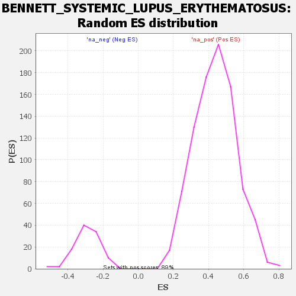

Profile of the Running ES Score & Positions of GeneSet Members on the Rank Ordered List
| Dataset | DGErankName |
| Phenotype | NoPhenotypeAvailable |
| Upregulated in class | na_pos |
| GeneSet | BENNETT_SYSTEMIC_LUPUS_ERYTHEMATOSUS |
| Enrichment Score (ES) | 0.8799293 |
| Normalized Enrichment Score (NES) | 2.0048769 |
| Nominal p-value | 0.0 |
| FDR q-value | 6.731344E-4 |
| FWER p-Value | 0.004 |
| SYMBOL | RANK IN GENE LIST | RANK METRIC SCORE | RUNNING ES | CORE ENRICHMENT | |
|---|---|---|---|---|---|
| 1 | PLSCR1 | 14 | 13.451 | 0.3253 | Yes |
| 2 | MX1 | 121 | 3.818 | 0.4109 | Yes |
| 3 | TNFSF10 | 238 | 3.114 | 0.4789 | Yes |
| 4 | IFI44L | 285 | 2.951 | 0.5474 | Yes |
| 5 | LY6E | 369 | 2.735 | 0.6083 | Yes |
| 6 | IFI35 | 562 | 2.318 | 0.6520 | Yes |
| 7 | TAP1 | 584 | 2.272 | 0.7057 | Yes |
| 8 | OAS1 | 796 | 2.021 | 0.7409 | Yes |
| 9 | MX2 | 856 | 1.960 | 0.7846 | Yes |
| 10 | SERPING1 | 933 | 1.893 | 0.8255 | Yes |
| 11 | AGRN | 1135 | 1.740 | 0.8546 | Yes |
| 12 | S100A8 | 1346 | 1.613 | 0.8799 | Yes |
| 13 | STAT1 | 4790 | 0.597 | 0.6691 | No |
| 14 | CKAP4 | 6807 | 0.191 | 0.5418 | No |
| 15 | IFIT3 | 10704 | -0.236 | 0.2926 | No |
| 16 | TDRD7 | 11819 | -0.324 | 0.2275 | No |
